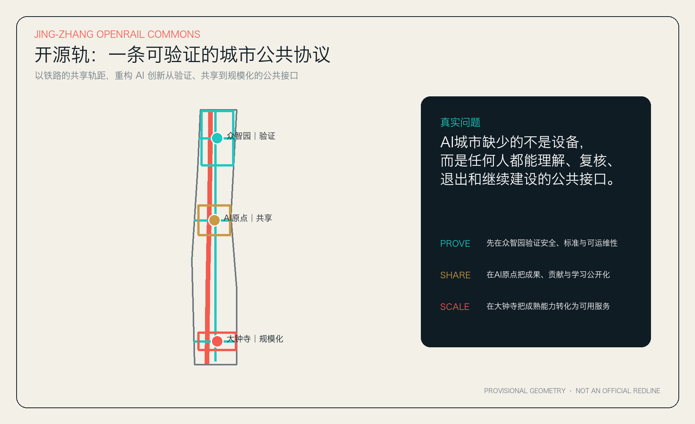
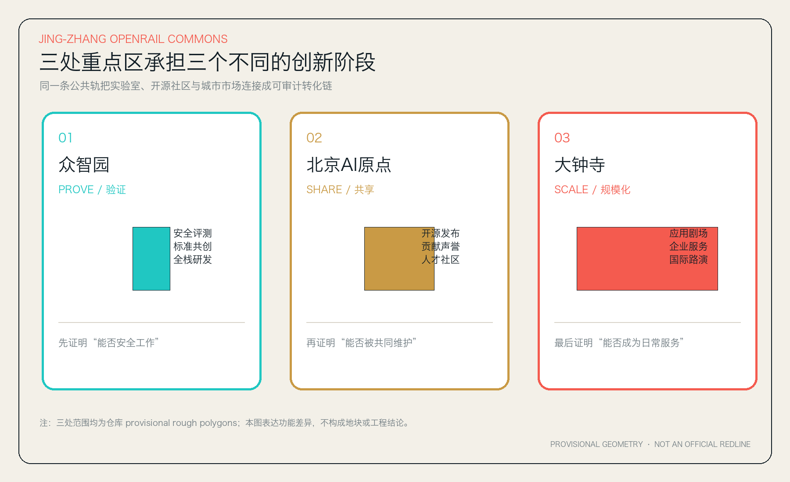

11.41
km²01 / FIRST PRINCIPLES
少一些设备崇拜
多一条公共协议
公共价值不由传感器数量决定，而由五件事决定：公众能否理解、专业人员能否复核、使用者能否退出、失败时能否回退、后来者能否继续建设。

02 / RECOMPUTABLE
可复算指标
数值来自同一组 GeoJSON 与 EPSG:4548 面积复算；official polygons 到位后将整体重生成。
10.4
%0.4
%UNKNOWN
待官方控规03 / THREE PROOFS
三处重点区
三种证明
不是三个同质园区，而是同一创新链上的三个不同关口。
PROVE / 技术可信
众智园
模型体检站、机器人共行街、端侧能耗沙盒。把安全、标准和运维前置。
SHARE / 社区可维护
北京AI原点
开源发布厅、贡献者护照、近校成果诊所。让知识、声誉与人才可积累。
SCALE / 服务可选择
大钟寺
应用剧场、国际路演客厅、合规会客厅。让成熟能力走向真实使用。

04 / 12 SCENARIOS
每个 AI 场景
都有退出按钮
场景卡同时写清空间、最小数据、人工复核与失败回退，避免“技术可行”被误写为“可以部署”。
01
模型体检站
最小数据 公开测试集与授权样本
人工/退出 红队专家复核；失败即停止展示
02
机器人共行街
最小数据 封闭测试日志
人工/退出 安全员接管；物理急停
03
端侧能耗沙盒
最小数据 设备侧聚合能耗
人工/退出 专业工程复核；不接入正式电网控制
04
开源发布厅
最小数据 自愿发布的项目元数据
人工/退出 作者确认授权与撤回
05
贡献者护照
最小数据 用户主动提交的贡献记录
人工/退出 不做信用评分；允许匿名与删除
06
近校成果诊所
最小数据 团队主动填写的需求
人工/退出 法务/技术顾问人工结论
07
AI无障碍导览
最小数据 公开设施数据与即时反馈
人工/退出 用户可忽略建议；人工报障入口
08
人机协商亭
最小数据 匿名议题与聚合意见
人工/退出 不代替法定公众参与
09
应用剧场
最小数据 企业自愿演示数据
人工/退出 明确试用状态与责任主体
10
国际路演字幕代理
最小数据 活动方授权语音
人工/退出 人工同传复核；不保存声纹
11
遗址记忆检索桌
最小数据 已清权档案目录
人工/退出 史料策展人复核来源
12
活动日慢行调度
最小数据 匿名计数与人工巡查
人工/退出 只给建议；现场指挥负责决策
05 / REVIEW INDEX
专业审阅索引
以下栏目与机器校验要求一一对应，帮助评审者从图面快速进入正文和结构化证据。
总览地图总体概念、临时边界与南北主轨
三层范围统筹研究、总体设计、重点详细设计
重点区域众智园、北京AI原点、大钟寺
用地分区PROVE、SHARE、SCALE、CARE
交通慢行一条主轨、一条副轨、三条东西接口
蓝绿公共空间连续骨架、六个公共节点
更新项目六项概念项目与三道深化闸门
核心指标GeoJSON与EPSG:4548复算
任务覆盖公告要求与agent.1—agent.6全覆盖
自检状态目标状态 PASS；以self_check.json为准
来源正式、背景、临时资料分层使用
假设official polygons和控规等资料待补
06 / AUDIT TRAIL
一条可以追问的
证据轨
任何面积、空间动作与任务响应都可回到数据文件复核。缺失信息明确显示为 unknown，不用精确感掩盖不确定性。
SOURCE公告、任务书、标准与资料登记
GEOMETRYGeoJSON 是空间权威层
METRICEPSG:4548 复算
READ提案、图纸与离线网页解释
CHECK确定性、空间、视觉、专业自检
必须补齐：official polygons、控规指标、道路红线、权属、现状建筑、文保、市政、消防、防洪与交通资料。补齐后整体复算，不做局部替换。